Simple plots
As it was already mentioned, mdatools has its own functions for plotting with several extra options not available in basic plot tools. These functions are used to make all plots in the models and results (e.g. scores, loadings, predictions, etc.) therefore it can be useful to spend some time and learn the new features (e.g. coloring data points with a vector of values or using manual ticks for axes). But if you are going to make all plots manually (e.g. using ggplot2) you can skip this and the next sections.
In this section we will look at how to make simple plots from your data objects. Simple plots are scatter (type = 'p'), line (type = 'l'), line-scatter (type = 'b'), bar (type = 'h') or errorbar (type = 'e') plots made for a one set of objects. All plots can be created using the same method mdaplot() by providing a whole dataset as a main argument. Depending on a plot type, the method “treats” the data values differently.
This table below contains a list of parameters for mdaplot(), which are not available for traditional R plots. In this section we will describe most of the details using simple examples.
| Parameter | Description |
|---|---|
cgroup |
a vector of values (same as number of rows in data) used to colorize plot objects with a color gradient |
colmap |
colormap for the color gradient (possible values are 'default', 'gray' or a vector with colors) |
show.colorbar |
when color grouping is used, mdaplot() shows a colorbar legend, this parameter allows to turn it off |
show.labels |
logical parameter showing labels beside plot objects (points, lines, bars, etc). |
labels |
parameter telling what to use as labels (by default row names, but can also be indices or manual values) |
lab.col |
color for the labels |
lab.cex |
font size for the labels (as a scale factor) |
xticks |
vector with numeric values to show the x-axis ticks at |
yticks |
vector with numeric values to show the y-axis ticks at |
xticklabels |
vector with labels (numbers or text) for the x-ticks |
yticklabels |
vector with labels (numbers or text) for the y-ticks |
xlas |
an integer between 0 and 3 telling at which angle the x-tick labels have to be show |
ylas |
an integer between 0 and 3 telling at which angle the y-tick labels have to be show |
show.axes |
logical, if TRUE, function will make a new plot, if FALSE, add the plot objects to a previous one |
show.lines |
a vector with two numbers — position of horizontal and vertical lines on a plot (e.g. coordinate axes) |
show.grid |
logical, show or not a grid |
show.excluded |
logical, show or not objects corresponded to the excluded rows |
Scatter plots
We will use people dataset for illustration how scatter plots work (see ?people for details).
data(people)For scatter plots the method takes first two columns of a dataset as x and y vectors. If only one column is available (or data object is a vector), mdaplot() uses it for y-values and generate x-values as an index for each value.
par(mfrow = c(2, 2))
mdaplot(people, type = 'p')
mdaplot(people[, c(6, 7)], type = 'p')
mdaplot(people[, 1], type = 'p', ylab = 'Height')
mdaplot(people[1, ], type = 'p', ylab = '')
All parameters, available for the standard points() method will work with mdaplot() as well. Besides that, you can colorize points according to some values using a color gradient. By default, the gradient is generated using one of the diverging color schemes from colorbrewer2.org, but this can be changed using parameter colmap as it is shown below.
par(mfrow = c(2, 2))
mdaplot(people, type = 'p', cgroup = people[, 'Beer'])
mdaplot(people, type = 'p', cgroup = people[, 'Beer'], show.colorbar = F)
mdaplot(people, type = 'p', cgroup = people[, 'Beer'], colmap = 'gray')
mdaplot(people, type = 'p', cgroup = people[, 'Beer'], colmap = c('red', 'yellow', 'green'))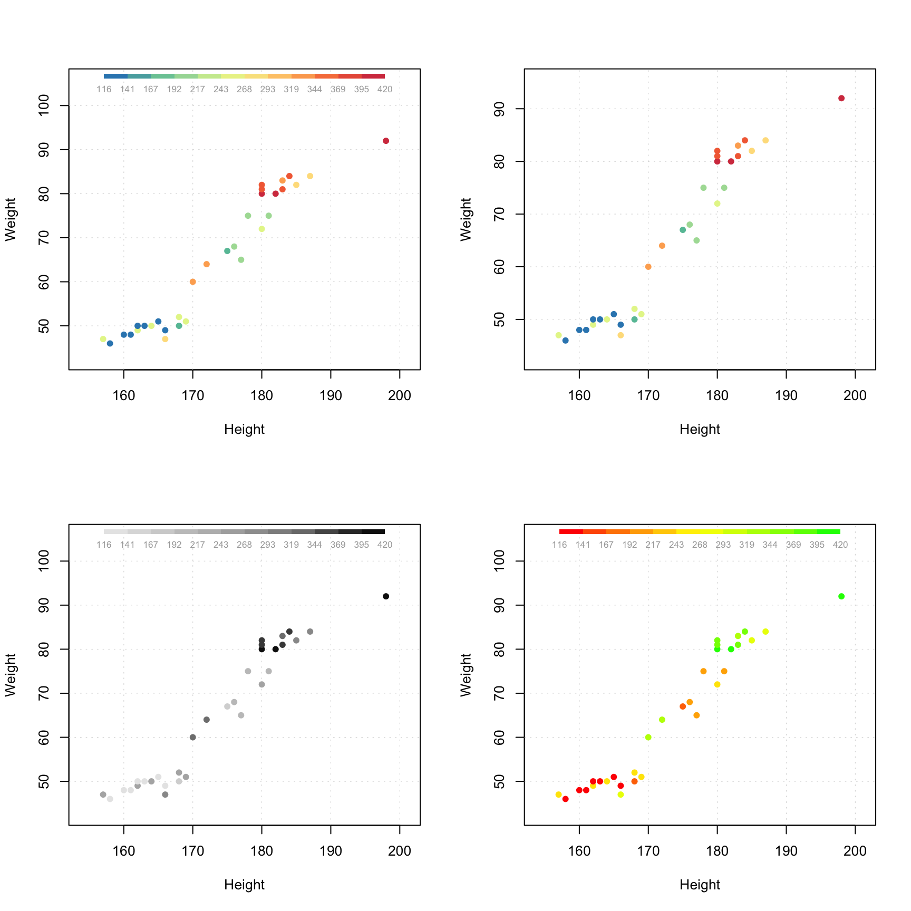
If the vector with values for color grouping is a factor, level labels will be shown on a colorbar legend.
g = factor(people[, 'Sex'], labels = c('Male', 'Female'))
par(mfrow = c(1, 2))
mdaplot(people, type = 'p', cgroup = g)
mdaplot(people, type = 'p', cgroup = g, colmap = 'gray')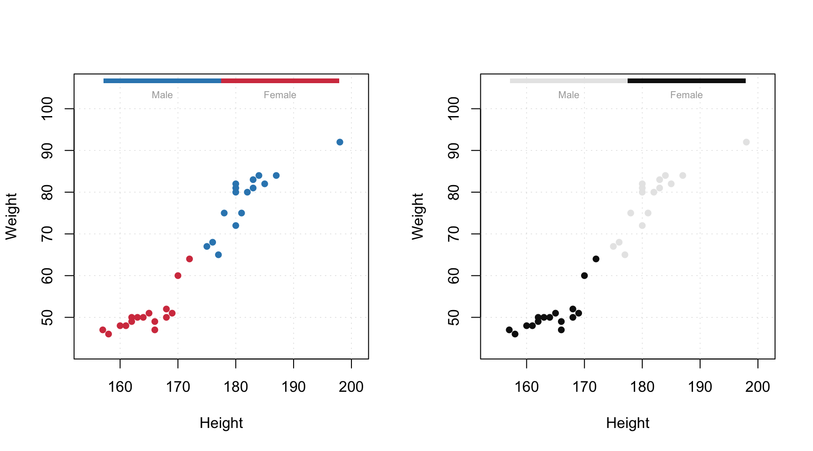
Another useful option is adding labels to the data points. By default row names will be taken for the labels but you can specify a parameter 'labels', which can be either a text ('names' or 'indices') or a vector with values to show as labels. Color and size of the labels can be adjusted.
par(mfrow = c(2, 2))
mdaplot(people, type = 'p', show.labels = T)
mdaplot(people, type = 'p', show.labels = T, labels = 'indices')
mdaplot(people, type = 'p', show.labels = T, labels = 'names', lab.col = 'black', lab.cex = 1)
mdaplot(people, type = 'p', show.labels = T, labels = paste('obj', 1:nrow(people)))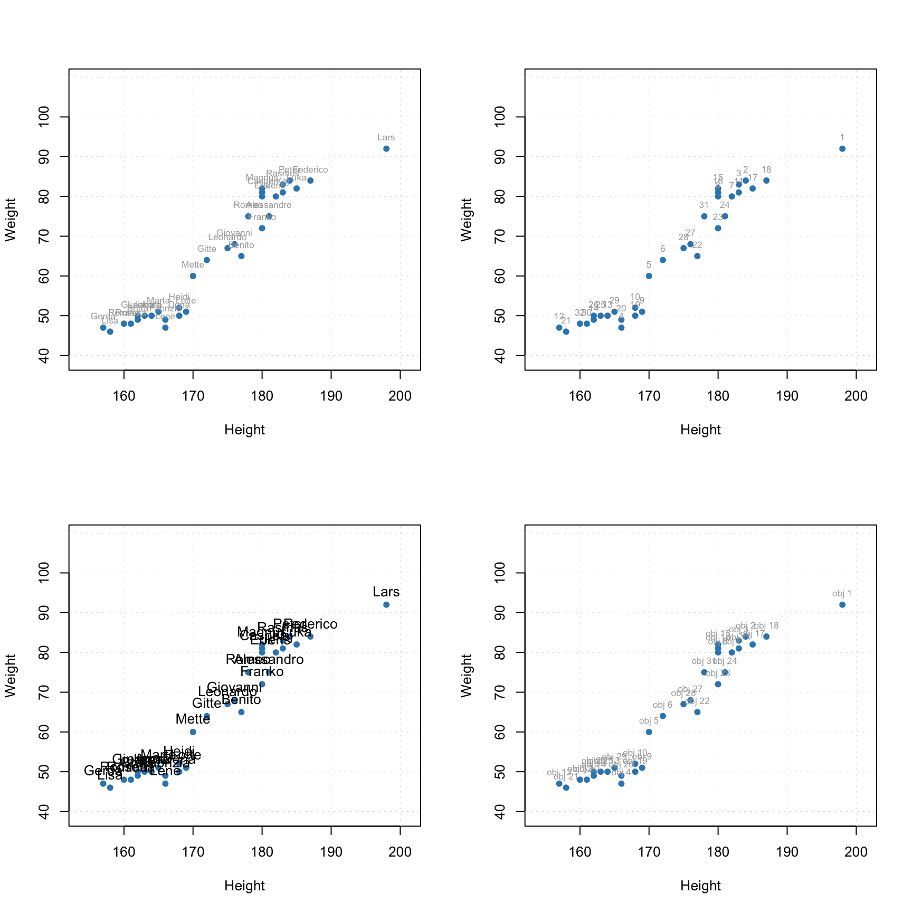
The plots work well with the data attributes (names, axis names, etc.).
attr(people, 'name') = 'People'
attr(people, 'xaxis.name') = 'Parameters'
par(mfrow = c(1, 2))
mdaplot(people, type = 'p', show.labels = T)
mdaplot(people, type = 'p', show.labels = T, labels = 'indices')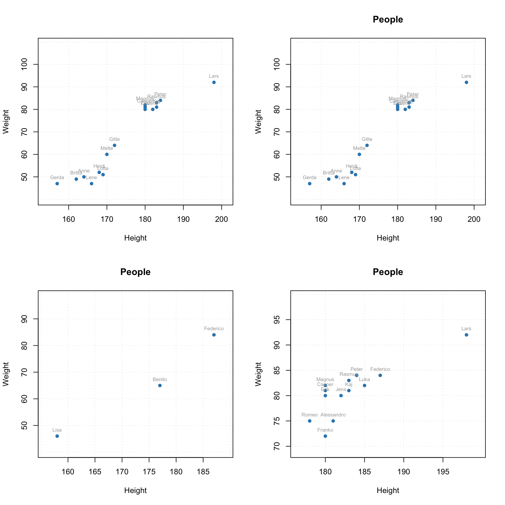
To avoid any problems with arguments when you make a subset, use mda.subset() instead of the traditional ways. As you can see in the example below, if we take first 16 rows, information about excluded objects (as well as all other uder defined arguments, e.g. 'name') disappear and they are show in the plot as normal. But if we use mda.subset() it will take the subset without excluded rows as it is shown below. The subset can be created using logical expressions as well as indices or names of the rows.
weight = people[, 'Weight']
par(mfrow = c(2, 2))
mdaplot(people[1:16, ], show.labels = T, type = 'p')
mdaplot(mda.subset(people, subset = 1:16), show.labels = T, type = 'p')
mdaplot(mda.subset(people, subset = c('Lisa', 'Benito', 'Federico')), show.labels = T, type = 'p')
mdaplot(mda.subset(people, subset = weight > 70), show.labels = T, type = 'p')You can also manually specify axis ticks and tick labels. The labels can be rotated using parameters xlas and ylas, see the examples below.
par(mfrow = c(2, 2))
mdaplot(people, xticks = c(165, 175, 185), xticklabels = c('Small', 'Medium', 'Hight'))
mdaplot(people, yticks = c(55, 70, 85), yticklabels = c('Light', 'Medium', 'Heavy'))
mdaplot(people, xticks = c(165, 175, 185), xticklabels = c('Small', 'Medium', 'Hight'),
xlas = 2, xlab = '')
mdaplot(people, yticks = c(55, 70, 85), yticklabels = c('Light', 'Medium', 'Heavy'),
ylas = 2, ylab = '')
If both axis labels and rotated axis ticks have to be shown, you can adjust plot margins and position of the label using par() function and mtext() for positioning axis label manually.
par(mfrow = c(1, 2))
# change margin for bottom part
par(mar = c(6, 4, 4, 2) + 0.1)
mdaplot(people, xticks = c(165, 175, 185), xticklabels = c('Small', 'Medium', 'Hight'),
xlas = 2, xlab = '')
mtext('Height', side = 1, line = 5)
# change margin for left part
par(mar = c(5, 6, 4, 1) + 0.1)
mdaplot(people, yticks = c(55, 70, 85), yticklabels = c('Light', 'Medium', 'Heavy'),
ylas = 2, ylab = '')
mtext('Weight', side = 2, line = 5)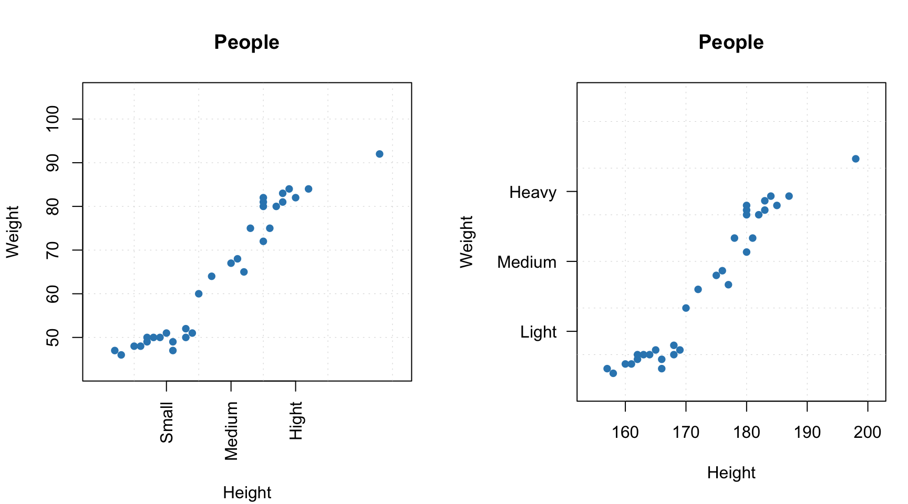
There are also a couple of other parameters, allowing to show/hide grid as well as show horizontal and vertical lines on the plot (axes limits will be adjusted correspondingly).
par(mfrow = c(1, 2))
mdaplot(people, show.grid = F, show.lines = c(170, 65))
mdaplot(people, show.lines = c(220, NA))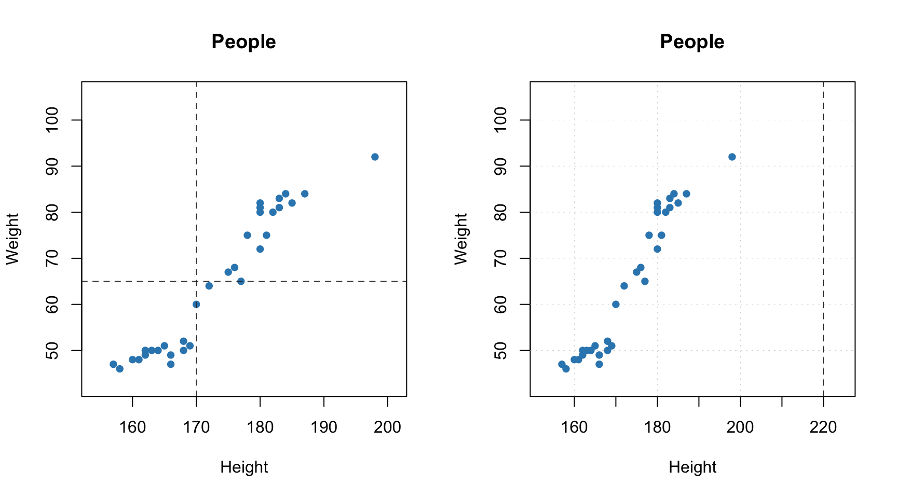
Line plots
When line plot is created, the mdatools() shows a line plot for every row. So if data set has more than one row, the plot will show a banch of lines having same properties (color, type, etc). This is particularly useful when working with signals and spectroscopic data. In this subsection we will use simulated UV/Vis spectra from simdata.
data(simdata)
spectra = simdata$spectra.c
conc = simdata$conc.c[, 1]
wavelength = simdata$wavelength
attr(spectra, 'name') = 'UV/Vis spectra'
attr(spectra, 'xaxis.name') = 'Band index'Here are simple examples of how to make the line plots.
par(mfrow = c(2, 1))
mdaplot(spectra, type = 'l')
mdaplot(spectra, type = 'l', col = 'darkgray', lty = 2)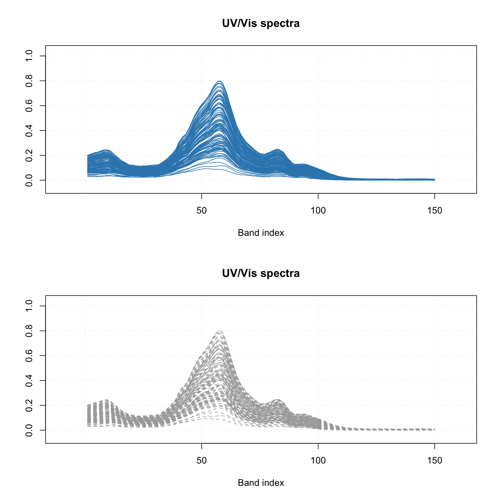
Most of the parameters described for scatter plots will work for the line plots as well. For example, you can colorise the lines by using a vector with some values (in the example below I use concentration of one of the chemical components).
par(mfrow = c(1, 1))
mdaplot(spectra, type = 'l', cgroup = conc)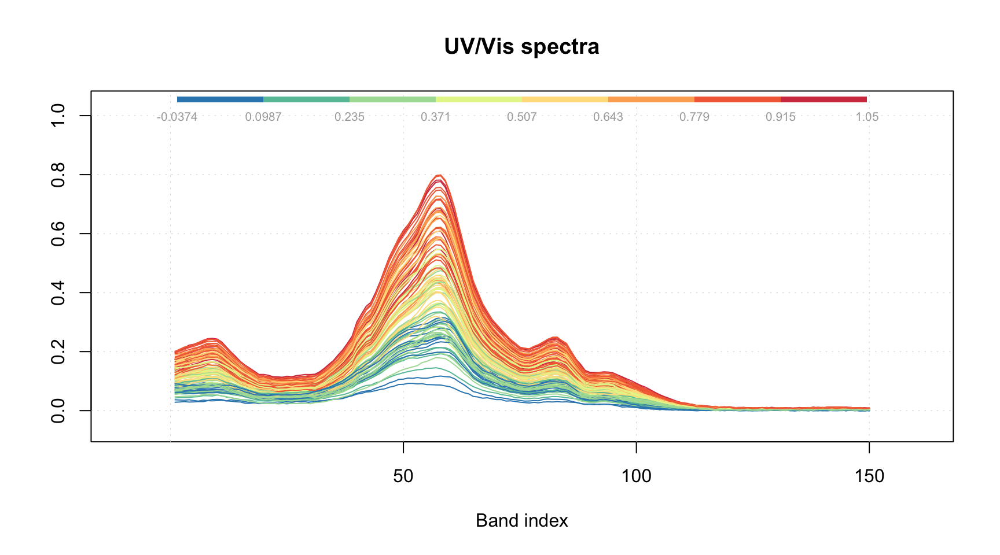
One of the new features, appeared first in version 0.8.0, is a special attribute, allowing to provide manual x-values — 'xaxis.values' (similar parameter for y-values is 'yaxis.values'). In the example below we show the spectra using wavelength in nm and wavenumbers in inverse cm.
par(mfrow = c(2, 1))
attr(spectra, 'xaxis.name') = expression('Wavenumbers, cm'^-1)
attr(spectra, 'xaxis.values') = 10^7/wavelength
mdaplot(spectra, type = 'l')
attr(spectra, 'xaxis.name') = 'Wavelength, nm'
attr(spectra, 'xaxis.values') = wavelength
mdaplot(spectra, type = 'l')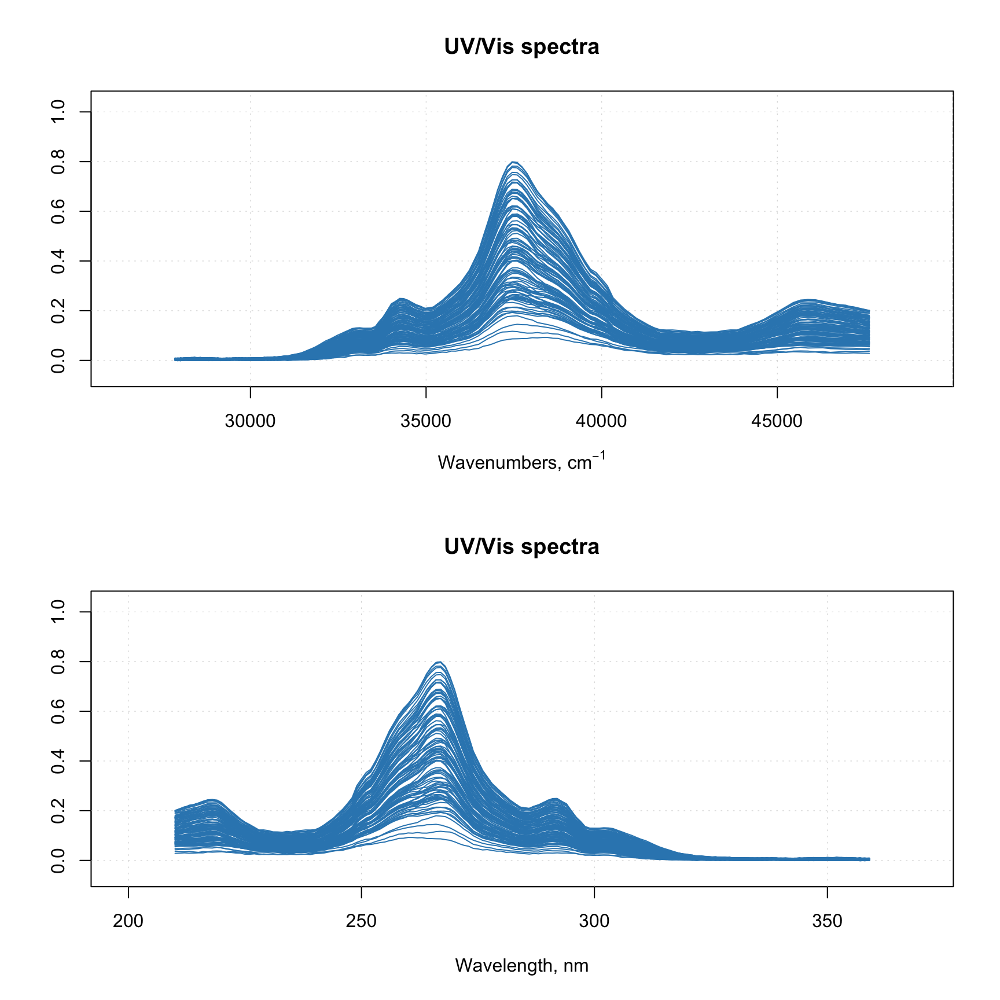
When you provide such data to any model methods (e.g. PCA, PLS, etc), then all variable related results (loadings, regression coefficients, etc.) will inherit this attribute and use it for making line plots.
Bar and errorbar plots
Bar plot is perhaps the simplest as it shows values for the first row of the data as bars. Let us get back to the people data, calculate mean for all variables and show the calculated values as a bar plot (excluding column with Income as it has much bigger values comparing to the others) — in the simplest form as well as with some extra parameters.
m = matrix(apply(people, 2, mean), nrow = 1)
colnames(m) = colnames(people)
m = mda.exclcols(m, 'Income')
par(mfrow = c(2, 1))
mdaplot(m, type = 'h')
mdaplot(m, type = 'h', xticklabels = colnames(people), col = 'red', show.labels = T,
labels = 'values')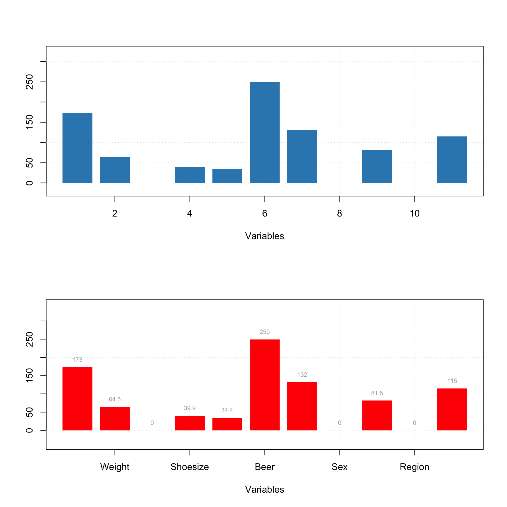
Errorbar plot always expect data to have two or three rows. The first row is a origin points of the error bars, secod row is the size of the bottom part and the third row is the size of the top part. If data has only two rows the both parts will be symmetric related to the origin. In the example below we show mean and standard deviation of the people data as an error bar.
d = rbind(apply(people, 2, mean), apply(people, 2, sd))
rownames(d) = c('Mean', 'Std')
colnames(d) = colnames(people)
attr(d, 'name') = 'Statistics'
d = mda.exclcols(d, 'Income')
par(mfrow = c(2, 1))
mdaplot(d, type = 'e')
mdaplot(d, type = 'e', xticklabels = colnames(people), col = 'red')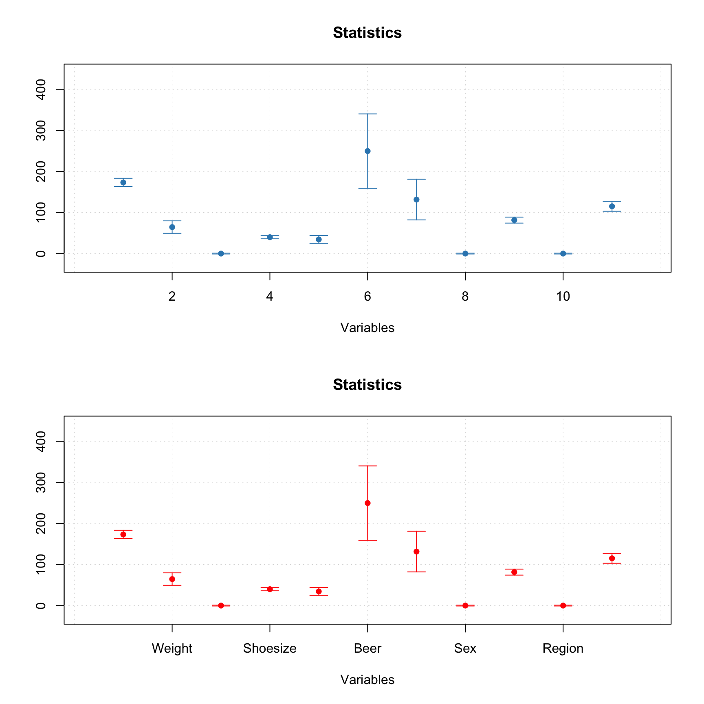
All simple plots can be combined together on the same axes. In this case, first plot is created as usual and all other plots have to be created with option show.axes = F as it is shown below. It must be noted that in this case axes limits have to be set manually when creating the first plot.
par(mfrow = c(2, 1))
mdaplot(m, type = 'h', col = 'lightgray', ylim = c(0, 400))
mdaplot(d, type = 'e', show.axes = F, pch = NA)
mdaplot(m, type = 'b', ylim = c(0, 400))
mdaplot(d, type = 'e', show.axes = F)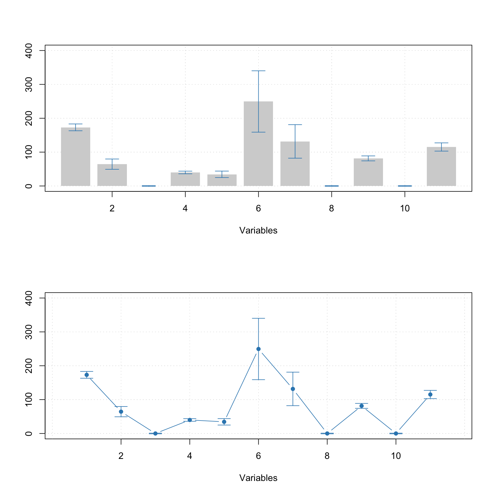
In the next section we will discuss plots for several groups of objects (rows).